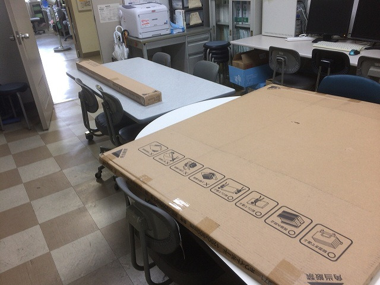
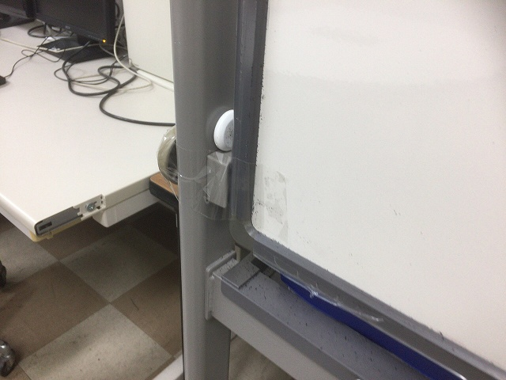
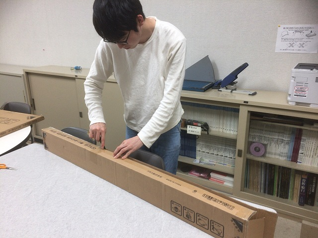
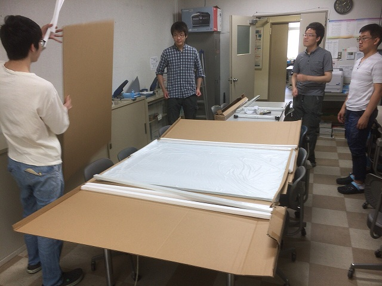
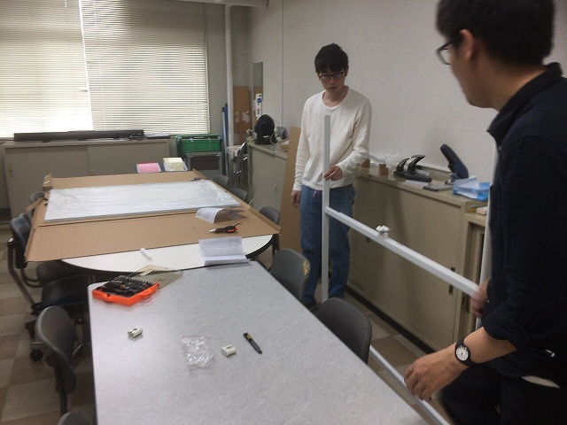
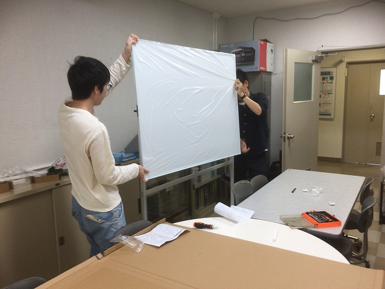
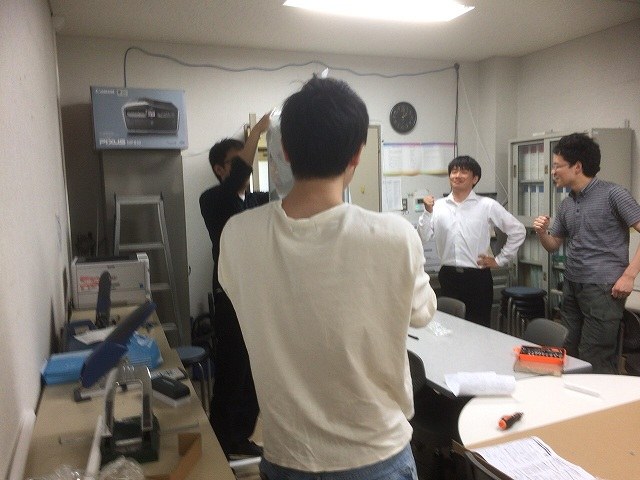
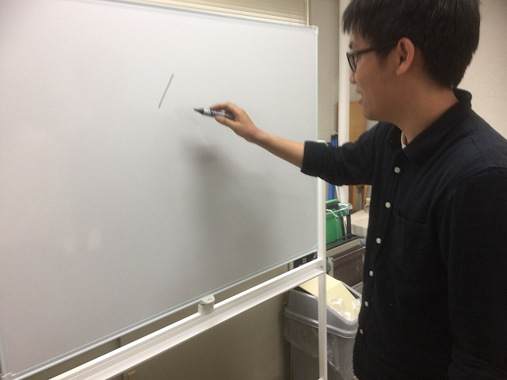
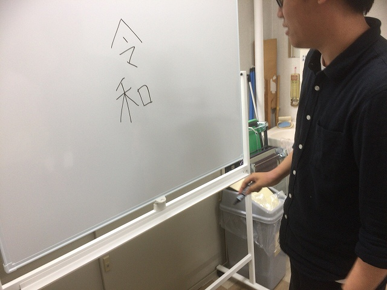
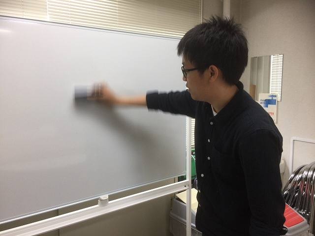

| ・ ホワイトボード (H31.06.03) | |||
Fの部屋のホワイトボード固定部が壊れたので買い換えました。工学実験TAのM1のM山さんとY山さんが選定と組み立てです。後で剛性が低いので書きにくい！、 と助教の人がクレームがあったので、フレームを重たい古い方に換装する改造も行っています。固有振動数fn=(k/M)^0.5のMを重くして、板書時の入力周波数 と合っていたfnをずらしたわけです（すごい早口でY山さんが）。 |
|||
|

納品 |

ここのストッパが壊れた | ||
|

開封 |

集まる人たち | ||
|

特に手伝ってくれない |

よし！ | ||
|

よし！、は参加 |

書き初め | ||
|

令和 |

消し味もいい | ||